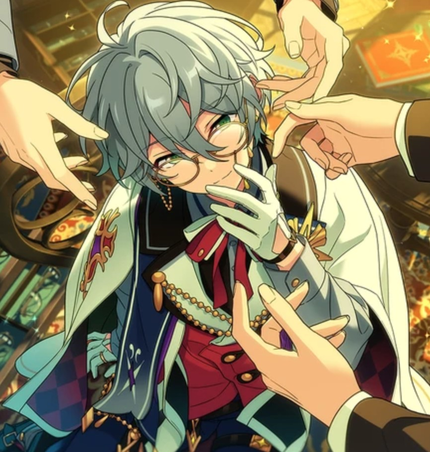

EYE FITTING

Chapter 1

“Good afternoon, everyone.”
“We have taken on the position of eyewear coordinators as the Eye Fitting ambassadors. I am Kanna of Esupuri.”
“This is Tsumugi Aoba from Switch~♪”
“I'm AKATSUKI's Hasumi Keito.”
“And I am Saegusa Ibara of Eden!”
“And so begins this large-scale project, where we idols have been entrusted to man the frontlines of promoting the countless establishments that are collaborating with the MEGASPHERE!”
“It's not just us four who are taking part in this project either.”
“Other idols will have their own campaigns, giving it their all to advertise the charms of all the different products and stores taking part in the collaboration.”
“As the Eye Fitting ambassadors, we’re going to do everything we can to show you all the charms that glasses have to offer~”
“That's right. I personally have a deep, deep emotional connection with glasses.”
“To have been chosen as an ambassador for this project...- I truly, truly am happy for it...!”
(Don't tell me… Is he crying...?)
“Fufu, there’s certainly no one more up to the task than Keito-kun here.”
“You're absolutely right about that.”
“And now, I will proceed to make an announcement.”
“After the broadcast ends, the four of us will set up shop in the MEGASPHERE where we will be selling and advertising their products.”
“Of course, there will be photo opportunities as well! We are dressed special for the occasion, so please come and see us!”
“This is our first day working as ambassadors. We intend to do so carefully and properly.”
“For everyone on their way to the MEGASPHERE, please make sure to visit the Eye Fitting shop ♪”

Ya-hoo, Ya~hoo☆ We saw the stream~!
Good work out there! Looks like Eye Fitting is on track to be a roaring success!!!!
Yo, buddy my pal! Lookin’ good in those glasses there~☆ Lemme get a closer look at those peepers!
Please refrain from jumping on and clinging to me suddenly. I could have fallen due to our difference in physique, generally speaking.
Oh? Akehoshi-kun, Esu-kun, is everything okay with your own shop?
Yup! We finished our own ambassador stream without any problems, so we thought we’d drop in and say hi!
That’s right! Now here’s a pop quiz for you off the bat ♪
“What is the name of the store we’re supposed to be in charge of?”—!
You guys are working at the “Outdoor Shop,” right? I’m pretty sure it was called… PETRARCA?
Huh~? An immediate answer!? Well that’s boring, I went to the trouble of making a quiz and everything~?
Quiz or no quiz, they already shared the information of who were ambassadors in which places, didn’t they?
In any case, they’ve partnered with a considerable amount of brands this time around on the MEGASPHERE.
It is exactly as you say. Because of the success of the MEGASTREAM, we idols are drawing in the eyes of the world.
The positive economic impact is immeasurable… It is already far surpassing the framework of the entertainment industry, and influencing not only the service industry, but by extension, the entire business economy!
As a result, many businesses are itching to partner with the MEGASPHERE, and so came a flood of offers when it came time to decide which brands to sponsor during the ambassador program.
I was not there doing the selection process, but according to Anzu-san, there were many, many companies they had to regretfully turn down.
Hmm. I sure do hope we’ll get to work with the companies we ended up rejecting this time around, huh? ♪
You say that casually, but just because a business has great accomplishments doesn’t mean just any business will do, you know.
The act of becoming an ambassador for a business isn’t just about “advertising” it: we become the face of that brand.
When advertising as a “poster boy”, the idol's image and the product’s image merge to become one.
What I mean to say is that on the off chance a business has a scandal that negatively impacts the image of the brand, that negative impact transfers right over to us idols…
And that idol’s value and reputation plummets alongside the brand’s.
You could call it… the idol and the business boarding the same boat and sharing the same fate.
That’s why I think they held such a careful, deliberate vetting process.
That’s exactly right. That said, the work we’ve received this time is worth it, even if it means shouldering such a risk!
Meaning?
Up until now, work of this nature has been left to models and actors, so it isn't often we get left to it.
Still. Now that the world has begun to notice the existence of idols, the status of those models and actors seem to have started to come around towards us.
As far as things are concerned for the MEGASPHERE, we cannot let this opportunity pass us by.
If we make such firm achievements like this, our leverage as idols expands within the entertainment industry after all.
This is everything we could hope for! The business side gets a large boost in publicity, and for idols, we can level a new playing field for ourselves…
It’s a Win-Win situation for both parties!
This might be a bit of a taboo topic, but it certainly is a welcome thing for each idol to obtain a larger cut of the earnings for themselves.
Not to mention, as a special perk of being ambassadors, it looks like we’re able to help ourselves to some of the product♪
In our case, we’re being invited to an exhibition showcasing new products, where we’ll have priority access to high-end frames designed by famous designers. Isn’t that amazing~?
So it’s basically a Win-Win-Win for all sides! Being an ambassador rules!!!!
Esu. I know you’re excited, but this is work in its own right, you know. You should properly think through the significance of having such a privilege.
You should check the products that you’re given and appraise them for yourself, so when it comes time to advertise them, you can sincerely convey your impression of them to the customers.
It shouldn’t be, “I’m lucky to have received this product…” You should think about how to connect value to the products you were given.
I-I see… I feel like I’m learning already!
In other words, for as much as is expected of us, the results of our efforts should be returned ten-fold.
M~n. I feel like you don’t have to take it that seriously, though?
It seems fun! It basically looks like, “playing shopkeeper” after all. I remember doing a part-time job like that!
Eh? You’ve had a part time job before, Akehoshi-senpai?
There were all kinds of “part-time jobs” you could have at school.
Well, I guess it varies person-to-person? Guys like Hok~ke probably haven’t worked that much.
That’s because for the most part we become idols straight after graduation, there’s no need to get a job unless we absolutely need to.
Just as each respective employee works in their own respective store, we must remember that we are, first and foremost, ambassadors. Our duty is purely for the sake of advertising, which I believe to be quite different from the job description of a regular part-time job.
That might be so, but… doesn’t sitting at the front of the store and recommending products to customers just now feel at least a little “part-timer core” to you guys?
Don’t work as an ambassador for some “aesthetic”, how incorrigible…
… Hm. That’s nice, playing shopkeeper.
Huh!? Did you just say that, Barry~? That’s a little surprising!
I don’t mean it’s nice in the way you mean it. I said it’s nice to think of it as a marketing technique.
“Marketing technique”?
Yes. As our first course of action for Eye Fitting, how about we shape the theme of our livestream as that of “Gaining Job Experience”?
I see. So in short, we’ll be conducting our work as “one day part-timers” and using that as content for our livestream, hm?
If anything, I feel that the content will lean more towards entertainment, like a certain job-experience theme park.1
Hm… They’ll certainly get more than enough content from us idols going about as storekeepers. So that element of surprise was what they honed in on, hm?
It’s fine, isn’t it? Now that we’ve become ambassadors, why not do something special with it?
Actually handling regular customers would cause crowding, so… let’s see…
Let us have Akehoshi-san and Esu-shi lend us a hand as our esteemed customers!
Wait, so Kanna is gonna be giving me glasses recommendations!? I’m in, I’m so IN! HECK YEAHHH ☆
Now then, we must strike while the iron is hot. Let us begin our preparations at once!
Labor at a minimum, results at a maximum!
It should definitely become a successful promotion…☆
…
Chapter 2

Now then. All we need to do is wait for the staff to bring over the equipment.
By the way… It’s a little strange to not see Yuuki-kun here in this particular member lineup.
When you think of Ukki~ you think of a megane character, and when you think of megane characters, you think of Ukki~, right?!
Don’t treat glasses like a character-class. Pay them more respect.
What does paying respect for glasses involve, exactly…?
Nevertheless, I too find the fact that Yuuki-san was not selected to be very surprising.
He leaves a much more striking impression with his glasses, while in comparison, I am known to take mine off while performing.
The job of ambassador is one based heavily on image. Therefore, I believe Yuuki-san would have been a much more suitable candidate for the Eye Fitting campaign.
I’ve heard that Yuuki-san took on the ambassadorship of the game center.
Yeah, “G-4 HEAVEN” if I remember correctly? Sora-kun was going back and forth, wondering if he should sign up or not.
As you said, the selection process for these jobs are determined in part by the idol’s personal proclivities, in addition to the judgement made by the MEGASPHERE and the offers made by the brands.
After all, because your job as an ambassador is to sell the product, you won’t get good results unless you have an actual interest in the selected field.
Well, in Yuuki-san’s case, he has a good track record of streaming video games. So that establishment probably reached out to him in a clamor, and from there he accepted it.
Hmph, so he chose video games over the glasses that help him day in and day out?
Video games owe everything to glasses. And here he is just saying, “glasses are my charm point,” so nonchalantly… He completely forgot his obligation to glasses, the traitor.
I’m not so sure he needs to be obligated to the glasses themselves…

Hello~ Our stream ended so we thought we’d come say hi♪
Pardon me! Is Hasumi-dono here?!
...
...
...
...
…? (Looking at Makoto)
W-What’s everyone looking at me for!? Don’t stare at me like that, it’s scary!
Well, if it isn’t the traitor to glasses himself!
“Traitor to glasses”!? What’s with the offensive nickname!?
Sit right there! (Holding a rolled-up piece of paper) I’ll give this traitor-megane the punishment he deserves ☆
Wait, wait, I have absolutely no clue what you’re talking about!?
Akehoshi-dono, do you call that a stance? You need to put your hips into it!
Kanzaki. You butting in just makes the matter even more troublesome. Sit down for a moment.
Alright. I’ll do as you say.
Yuuki…
Eek, no seriously, you’re freaking me out!? What sin could I have possibly committed to warrant this!?
You chose video games over glasses. Is that right?
Eh? I chose games over glasses? Umm… What does that mean?
I’m talking about being an ambassador. You did away with Eye Fitting, and took on the ambassador job for G-4 HEAVEN instead, didn’t you?
Y-Yes… And for your information, it’s not that I “did away” with it!
I was asked personally by the game center before I even had the chance to sign up.
So that’s how it is. You’ve forsaken glasses and all the times they’ve come to save you, and chose them instead…
I-I’m sorry…
Still… The road to glasses is open to all.
Even if you treat them so flippantly the way you do, glasses will accept you.
Alright, I suppose you can come into the store too.
T-Thank you very much…? Anyways, I’ll always love glasses, whether I’m an ambassador for them or not…!
Everyone, the staff brought over a camera for us.
WOAH!? Dude, how could you just oh so casually wander into the convo when the mood is like this!?
I’m sorry, did I interrupt?
Ahh yeah, sorry… Wait, huh?
Are you calling me a tsukkomi right now!? Tsukkomi, when I’m basically the boke of Trickstar!?
Mnn, I wasn’t being a boke just now, though.
Alright, let’s reign it back in. Shall we start up the stream?
Hey, I said I wasn’t trying to fool around. Listen to me!
Ukki~ and you guys came all the way over to hang out, so let’s go play customer together!
Hold on a moment. I do not think I’ve completely understood what is going on.
Don’t sweat it! We’re basically just here to act like customers on the Eye Fitting livestream!
So they’re picking out glasses for everyone? That might be kinda fun.
Alrighty, let’s head on over there~☆

“Welcome in.”
“Welcome in.”
“Please, feel free to try on anything you like.”
“Please, feel free to try on anything you like.”
"Ahaha, they really do seem like storekeepers! And everyone has their own different pair of glasses~♪"
“Well then, Hasumi-dono. Will you select the pair of glasses that suits me best?”
“Of course. For you, Kanzaki, I’d recommend this pair.”
“Hmm. Silver-frame glasses, just like the ones you wear, Hasumi-dono?”
“This fine pair of glasses is as weightless as it gets. These glasses were made from material even the aerospace engineering industry uses, hammered down to its absolute limits to achieve a lightness so fine, down to its very last screw.”
“This pair of glasses won’t inhibit aggressive movements, such as… take for instance, your practice-swings– you’ll completely forget that you’re even wearing them.”
“Ohh, how very intriguing! I am not very familiar with glasses, so I fear I’ve unjustly suspected that they might be an inconvenience… but to think that there are pairs that feel like you aren’t wearing them at all!”
“Well then, let me try those on at onc…–”
“Hold on now. There’s no need to be so impatient.”
“First, let your eyes savor this absolute beauty. Look at these beautiful curves. Look how supple and smooth the curve of the frames are… They’re truly beautiful, aren’t they?”
“Besides, these glasses aren’t just light…”
“Wow… Hasumi-senpai is so, uh, passionate…”
“Yuuki-san, it seems my conversation is boring you, but I would appreciate it if you would look and listen this way all the same!”
“Uwah, my bad! I’m listening now I promise!”
“Now then, I would personally recommend this pair of glasses!”
“Your usual style is charming as well, but I feel that the atmosphere of a chic pair like the ones I am wearing would suit you as well ☆”
“It’s true, they’ve changed up your vibe a lot—like they’ve added this casual energy that makes you feel more approachable ♪”
“It might not be such a bad thing to change it up for myself every once in a while, huh…?”
“Well then, allow me to ring you up over here ♪”
By the way, you and these black-frame glasses would be a complete match made in heaven too, you know. I’ll put these in your cart as well.
“Wait, I didn’t say that I was ready to pay yet…!”

“Akehoshi-kun, are there any glasses that have caught your eye?”
“There were all kinds that felt stylish to me!”
“But, I don’t really know if I need any. It’s not like my eyesight’s particularly bad.”
“Fufu, well glasses aren’t only used to improve eyesight, they can be worn as a fashion statement too. For example…”
“What about this pair? I think they would suit you very well, Akehoshi-kun.”
“Yeah, those glasses might be super-cute on me! They suit you too, you know, Aoi-senpai☆”
“Hey, hey, Kanna. Which ones do you recommend?”
“...”
“Huh? Hellooo~ pal, you in there?”
(—Huh? Esu-kun and Kanna-kun…)

“...My apologies, I was lost in thought.”
“...”
(Huh? I wonder what happened with Kanna-kun just now?)
Chapter 3

Hmm. Looking at the reactions on socials, our first stream seems to be generally well-received. As ambassadors, I’d say this is an excellent start.
At this rate, our clients should be more than pleased with us!
...
Kanna-kun, what happened earlier? Is there something on your mind?
I’ve been worried too. It’s hard to get an exact read on your emotions, but it was clear to see you were uncertain about handling the customers.

If you ever have something that’s troubling you, or if there’s something you’re ever unsure of, please feel free to rely on us, okay?
Thank you very much… Well then, let me consult with you about one issue.
I have no interest in glasses whatsoever, what should I do about this?
…!
…!
Once again, quite a blunt way of putting that…
My apologies. My phrasing was a little misleading.
To be more precise, as I have yet to have an opportunity in my lifetime to form an interest in glasses, I am ill-informed on the matter.
Doesn’t that completely change the meaning of what you said?
To me, glasses are simply an external device made with the singular aim of assisting visual acuity, that is the extent of my knowledge.
Even the pair I usually wear—I only went to the store because my mother said she’d buy them for me. The details and the specifications are all but lost on me.
I see~ So the reason you had such a troubled look on your face was…
Yes. Due to not having accumulated enough mental data regarding eye glasses, I was unable to answer Esu-san’s inquiries.
I see. It seems like you’ll be able to come up with some kind of strategy if you gain a better understanding, then.
That may be so, but Kanna-shi. Sometimes, there are instances when an idol needs to employ the art of the lie.
Listen well. If you have no knowledge on a subject, you need to be able to act like you do.
At the end of the day, an ambassador is a proverbial billboard. They aren’t employees, nor experts.
In short, you market the charms of the product while arming yourself with enough knowledge about it. That is the job requested of us.
Are you able to put on the guise that you know enough about the product? That’s what separates a useful idol from a useless one, right?
Ahaha, Saegusa-kun, as blunt as ever~ I’m glad the shop employees didn’t hear that.
To be honest, I do not have that much of a passion for glasses myself.
Glasses are merely a tool. As long as they’re useful, any will do… That’s about as far as it goes for me.
Well, honestly speaking, I’m not all that particular about them either.
The way I see it, as soon as the prescription goes bad and starts getting in the way of my daily life—that’s when it’s time to get a new pair.
Like this one time when I was at rehearsal, I couldn’t see very well because of my prescription and fell right off the stage. Natsume-kun got really mad at me for it too. Ahaha.
… That is no laughing matter, Your Majesty
How unexpected. It seems that everyone has around the same level of knowledge as I do.
You all were helping our customers so confidently, I believed that you already had extensive knowledge about glasses.
It seems what I’m lacking is not only information about glasses, but the communication skills to be able to bluff my way through an interaction.
Well, bluffing your way through isn’t always the best answer either. But it couldn’t be helped this time—between the time we were picked to be ambassadors right up until we started the stream, there just wasn’t enough time to prepare..
That’s why it’s completely fine, Kanna-kun. We’re all in the same boat— not knowing anything about glasses, I mean. Let’s all learn bit by bit about them from here on out!

You guys…
You all sit and listen here!
...!
...!
So glasses are just a tool for vision to you? You’ll just replace a pair as soon as the prescription doesn’t work for you…?
You'll use them without understanding them because your mother picked them out for you!?
How incorrigible!
Are you guys going to let your mothers choose your spouses for you too?!
Is that not quite the drastic leap of logic?
It’s a metaphor!
Huh? Are you being serious when you say that? The metaphor hardly connects to anything.
Shut it. For a set of people selected to be ambassadors of Eye Fitting, you all are a very sorry bunch! You guys don’t love glasses nearly enough to be ambassadors!
While we leave the technical elements to the pros, they are leaving the role of conveying glasses’ charms to us.
Don’t you think that makes you insincere towards glasses!?
Keito-kun, let’s calm down a little bit, okay? Come on, deep breaths!
You—! Who are you to say…!
… No, you’re right. I lost my head there.
(Deep breath in) … (Deep breath out) …
Sorry. All I could see was red just now. But your attitudes towards glasses are just too disrespectful.
No, it’s not just a disrespect towards glasses. Your attitude even extends towards all the people involved in this company too, who cherish glasses so dearly.
…You’re not wrong. We were entrusted with this job, so we have to make sure to do it properly.
Well then, let’s start by reading this supplemental document for the time being. I’ve just shared it with you all on your Mega Phones.
Hm? This is… a training handbook for new hires at the Eye Fitting store?
Hmm… It’s an encyclopedic resource that covers subjects from the history of the structure of glasses to the basics of fitting, hm?
Earlier, while Hasumi-san was losing his temper, I contacted the company and had it sent to me.
I thought you were being unusually quiet. So this is what you were up to…?
I feel like a teacher whose lecture is going completely unheard by the students. It’s like talking to a brick wall.3
(Sighs) I simply thought it would be a waste of time to sit there and be scolded.
Well, let us read and learn about glasses then, shall we?
Chapter 4

Wellington, Boston, Square, Fox…
Crown Pant, Octagon, Flow…
Full Rim, Half Rim, Under Rim, Rimless…
Uu, it’s starting to sound like we’re chanting some magic spell or something~
When it came to glasses, I used to think that anything would do as long as you’d be able to see—to think that there are this many kinds…
Now I know just how carelessly I’ve been choosing my glasses up till now.
Heheh, that’s right ♪
Why the smug look, Hasumi-shi?
At any rate. What Kanna-shi was reciting just now were different frame shapes, while what His Highness was reciting were rim types, hm?
As a matter of fact, I happen to be wearing the “Wellington frames” myself.
And Kanna-shi is wearing… an oval under rim, I believe it was called?
Those are the great fruits of your studies, Saegusa
The style of frame greatly influences the impression of the glasses themselves, second only to their shape.
The difference between the plastic cell frame pair I’m wearing and the metal frame Kanna is wearing, for instance…
The way my pair would feel on your face, as well as the impression they would give to others, is completely different from his pair.
Take for example… This should be easy to understand.
This metal material’s mechanical round frame is completely different from this plastic material’s colorful round frame.
So it seems. The colorful pair gives off a more flashy, childlike impression in comparison.
Once you decide on the material or frames, next comes the lens
You can choose a colored lens too, if it suits your objective. If you want to protect your eyes from the reflections of asphalt, you can choose grey, and if you want to deflect the sun’s rays, blue or green would do just fine.
Ah, you’re right. The pair I borrowed does have a color tint to them.
I thought they were just a regular pair of trendy glasses… Who knew they could act as sunglasses on top of that?
Of course, you could choose a colored lens purely as a fashion statement too. But everyone has their own pair of eyes and lifestyles— no one is the same.
Shape, materials, and then function. Thinking, pouring over all of those things at once, until the day you meet the fated pair that meets your every need… That is what fate is.
Coming across something akin to a one-in-a-trillion answer… Do you understand?
That’s what glasses are— a romance.
… I see.

Ooh, have you finally realized the charm of glasses!?
No. That was in response to your earlier statement, Hasumi-san, in which I realized you essentially just likened glasses to that of a lover.
I see…
Fufu, there’s no need to be so disappointed, Keito-kun.
Anyways, I’ve come to learn that glasses have all sorts of types and functions.
Right. With this, I believe I am now somewhat capable of performing my duty as an ambassador.
Glasses are constantly evolving. You should continue your studies from here on out.
… But there’s something I’ve been wondering about for a while now. Where did that passion for glasses of yours come from, Hasumi-shi?
Hmph. I don’t have any particular reason for it. I’m just a young man who loves glasses.
So there was truly no such thing that gave you these feelings then.
I have a tendency to completely bury myself into things. Once I develop an interest, it’s like I completely fall in love with it.
I was charmed by the functionality and beauty of frames, so it even carries over into my daily life, where my eyes end up getting drawn to other people’s glasses.
I keep up with the news about the latest devices too, naturally. Smart glasses have made large strides lately.
Ah, I know a little about those too actually! The inside of the lens functions as a display, captioning words while they’re being spoken in real time.
There are models on the market that are loaded with features like audio recording capabilities and cameras, hm? I supposed you could call them a type of spy camera?
They could become a threat depending on what they’re used for, such as invasions of privacy, so I expect it will become necessary to arm oneself with defensive measures.
Indeed. Such an abuse of glasses is utterly incorrigible.
However, I do think the fact that glasses are going beyond fashion and utility into uncharted realms is very interesting
In particular, it’s a dream seeing glasses that were once the work of fiction in anime and manga be brought into and made in the real world.
Woah, so glasses with handy abilities like that show up in anime and manga too?
You don’t know the Great Detective Conan!?
His glasses can track criminals with homing devices and detect infrared lasers!
I see. It would certainly be efficient to be able to track criminals on the run through your glasses.
Furthermore, there would be no need for specialized equipment or a task force if your lenses had infrared detection built into them. I’d imagine it would have the potential of being cost effective, as well.
That’s right. It’s an absolute masterpiece, you should read it later.
I’m not sure technology has gotten to the point where the familiar functions from manga have come to fruition just yet.
That’s right. In something like our applicable day-to-day lives, naturally, cameras and recording devices are plenty common.
Now that I think about it, there was a time a while back when Kazehaya was using glasses with a wireless microphone, hm?4
… To be honest, I had wanted to try them for myself too.
Fufu, you’ve got an unexpectedly cute side, don’t you, Keito-kun?
… Shut it. Glasses are the dream of mankind, so it’s only natural.
Chapter 5

Anyways, as I was saying, the field of smart glasses is a wide, untamed frontier with a lot of room for growth and discovery.
Perhaps a future where we go from smartphones to smartglasses… could happen one day.
Right now, “Sphere Lives” are superior, but… augmented reality features could be incorporated into glasses any day now, and I imagine when they do, they’ll join the honorable ranks of the latest devices.
Even better glasses that surpass the ones in manga and anime should be born in this world soon enough.
Heheh, yes, that’s what makes glasses a romance indeed ♪
Hmm… Glasses that incorporate the technology of Sphere Live?
We idols are the only people benefitting from that technology right now, but…
If we were able to sell goods with that level of impact to the general markets, it would be quite a supreme promotional campaign.
Indeed. But when it comes to romance, the fact we are so far from their actual existence is what makes it romantic.
Let’s just wait with bated breath for those mega-performance glasses to come into this world for now.
I could make those.

Eh?
Eh?
Like I just said. I could make those.
Kanna. Did you just say you could make them?
Yes.
Really!? Are you really going to make them for me!?
Please do not squeeze my shoulders so tightly. It hurts.
Hasumi-shi. Didn’t you just say the romance came from the fact they were an impossibility?
It’s even more romantic when you can make the impossible possible!
I must get started right away now that I’ve decided to make them. I already have a comprehensive plan in mind.
That’s so like you, Kanna-kun. It’s very genius-like♪
I wouldn’t say making it is “genius-like”— I’d say he’s an actual genius.
An ambassador’s job is to promote their own respective storefronts. That being the case, the development of Hasumi-san’s mega-performance glasses is most likely my allotment as an ambassador.
…So you want to try making them, Kanna-kun?
I do not believe now is the time to get into my personal feelings on the matter.
I’m sorry, I was just a little curious is all.
…

I wonder. It might just be that I am interested in making them.
To create something that does not yet exist in this world… It does not sound boring, at the very least.
Well, what’s stopping you? Let’s make them, those mega-performance glasses!
If you’ve got the motivation and think it’s possible, then you should make it into a reality! No hesitation!
Is that so?
Yes! Even I’m starting to get a little excited now♪
I don’t want to put a damper on things, Your Majesty, but what do you intend to do about the practical matter of finances?
Linked to the promotion or not, I doubt a company like Eye Fitting would fund the development of a project with no proof of success.
And I’d say the same would go for us, the Mega Sphere. In the world of business, it’s a plain fact that you shouldn’t invest in something that has a poor plan of action.
… That’s certainly true. There’s a limit to how much capital we can leverage at our own whims. At worst, it wouldn’t be impossible to go about it by relying on our existing connections, but…
Mmm~ well we definitely can’t do that. It wouldn’t be very rational either.
…
Well then, it seems that it will be impossible to continue with this plan.
It seems so. Sure enough, we should use a different approach on the promotion.
In the meantime, why don’t we all take a small recess? We can brainstorm how we’ll do our promotion after.

…
…It’s a shame, isn’t it, Kanna-kun?
Not particularly. It is a nonissue.
(Hmm, is that really true, though? I’m getting the feeling that Kanna-kun looks a little dejected, almost…)
…
… Like I thought, we should make them after all. Those mega-performance glasses.
…?
If we don’t have the money, then we’ll just have to make some!
You must be joking, Your Majesty. About how much money do you think funding a development project entails, exactly?
I know, I know. But it’d be such a waste to just give up here, don’t you think?
Let’s take action first and think later—that doesn't sound half bad♪
Nevertheless, how will we solve our issue of funding? Are we going to start new part-time jobs?
Nope! We already have a way to make money~
How are we going to do it, then?
Fufu, we are working as ambassadors, you know...♪
Chapter 6

Buddy! Guess who~?☆
Was that an imitation of Yume-san? It was very similar, if so.
Stop it!? It’s even more shocking because I did it completely unconsciously!!!!
Speaking of, I heard the news! So the four of you designed your own dream glasses and started selling them as ambassadors, did I get that right?
Yes. We’re selling them to commemorate the grand opening of the Megasphere store.
Sounds about right for the shop Saegusa-senpai’s in, alright. His ability to get the ball rolling is no joke.
I guess glasses do make you smarter, eh? Maybe I should start wearing ‘em too?
No, the one leading the promotional efforts this time was Aoba-san.
Huh, really? That’s our Ex-Vice President for ya!
Esu-san, did you come to our shop to chat? I’m currently doing my job as an ambassador, therefore I do not have time for idle chatter.
Ahh, my bad. Nah, it’s just that I heard you guys would be working at the Eye Fitting store again today♪
So I was thinking, “Mannn, it’d be real nice if Kanna could pick out my glasses for me, huh”~ I mean, you never ended up choosing a pair for me the other day, remember?
So c’mon, one more time, lemme hear your employee certified recommendation please♪
…Understood. I am working as an employee at the moment, after all.
Let me see… I believe this model would suit you, Esu-san.
Ah, this pair… Aren’t these the ones you were wearing during your livestream?
Correct. These clear frames make it seem almost as if you aren’t wearing glasses at all. I believe them to be an especially good fit for you, Esu-san, as you do not wear glasses in your day-to-day life.
We also offer a non-prescription version that comes in three different colors. Would you be interested in trying them on?
I’m super interested! This is so exciting~♪

(Fufu, Kanna-kun, looks like all that studying yesterday paid off. He’s able to help out customers like a pro now…♪)
(...Oh? He’s coming over here after sending Esu-kun on his way. I might’ve been watching him a little too closely, maybe he noticed?)
Nice work there, Kanna-kun. You’re really shaping up to be a real salesperson.
Is that so? Thank you very much.
Nevertheless, Aoba-san. Are you sure this method will really work?
For us to sell our ideal glasses as ambassadors… It seems to be a very standard approach, or rather, I find it lacks a certain panache.
I thought you had some sort of ground-breaking, ingenious plan when you initially proposed raising funds. Only to find out that it was surprisingly ordinary, anticlimactically so.
Oof… But we can expect to make a profit because it’s so simple.
Besides, we didn’t go into this with the intention of making money anyways.
If this promotion succeeds, not only will we be able to build a solid track record as ambassadors…
But we could use that success to persuade the company of this being a real, worthwhile venture ♪
Adding value to our appeal as ambassadors, while winning us a development budget in return…
In short, having a stable, albeit simple, sales strategy is guaranteed to clear the way for consistent funding. Time efficiency notwithstanding.
I’m not so sure about the ‘winning a budget’ part, you might be overexaggerating a little. Well, not that you’re wrong.
Also, I’m planning on opening negotiations to gradually invest the promotion earnings into our development fund.
If all goes well, those mega-performance glasses of yours will be in your hands in no time!
…
I feel as if you may have misunderstood a crucial fact of the matter.
I for one, do not have any particular desire towards wanting to make those glasses.
It would strictly be for the purpose of advertising, as is our job as ambassadors.
Promotion for promotion’s sake would be nothing short of counterproductive.
I-Is that so…?
But, I want to see those glasses become real, so…
… A “romance,” was it?
That’s right, it's like a romance ♪
—So, does that mean you’re finally starting to get a feel for the romance of it all?
…
I’m not trying to come off as a know-it-all, but…
For you to take enough of an interest in something to the point where you said you wanted to try— I thought that was pretty out of the ordinary for you, Kanna-kun.
Isn’t the fact that you’re showing an interest means that somewhere, deep in your heart, you want to make them? That’s how it felt to me, at least.
That’s why I want you to make those mega-performance glasses, by any means necessary.
Fufu, but I might’ve just been meddling, huh?
…
You’re right. Objectively speaking, you were meddling.
(Sighs) Forgive me…?
Just why is it that you pay such close attention to me? We aren’t exactly close enough for you to do so.
Why, huh…? I wonder about that myself. Maybe it’s because I’m your senior at our agency that I just can’t help but worry about you…
Or it might just be that all I wanted was to see you make a new piece of technology, Kanna-kun.
Taking the time to desperately pool together funds despite not having the resources, let alone having no concrete evidence that it will even succeed—to be frank, it’s nothing but a fool’s errand.
I’m still only a child, so maybe it is due to the fact that I am young that these acts of whimsy are encouraged, but...
As this is a job, it is necessary for us to achieve tangible results through the shortest route possible.
…However.
If the emotion I am currently feeling is that of romance, then perhaps it would not be such a bad thing to try my hand at making them.
Romance is, after all, an unstoppable force.
— If… in the chance that those mega-performance glasses are completed. I will give you, Aoba-san, the honor of being the first to wear them.
I’d like to express my thanks, and I believe that to be the least I could do.
…!
Fufu, that makes me very happy. I’m looking forward to it, Kanna-kun ♪
Translation Notes
- ↑ Likely referring to Kidzania, a Mexican family entertainment center where kids come to roleplay different jobs and earn play-money. There are locations in Japan.
- ↑ Manzai is a two-man comedy act, where the two roles (the funny man-- the boke and the straight man-- the tsukkomi) have a quick and witty back and forth. The boke tends to be simple-minded or air-headed, while the tsukkomi is serious and often corrects the boke.
- ↑ 馬の耳に念仏 (lit. like chanting nembutsu in a horse's ear)
- ↑ This is referencing the story Housouge, when Keito helps Tatsumi fix a pair of wireless glasses he was wearing.